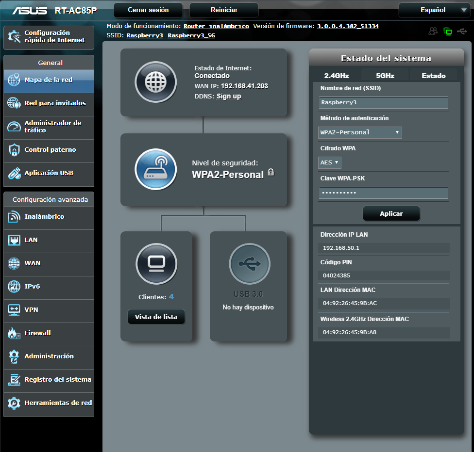
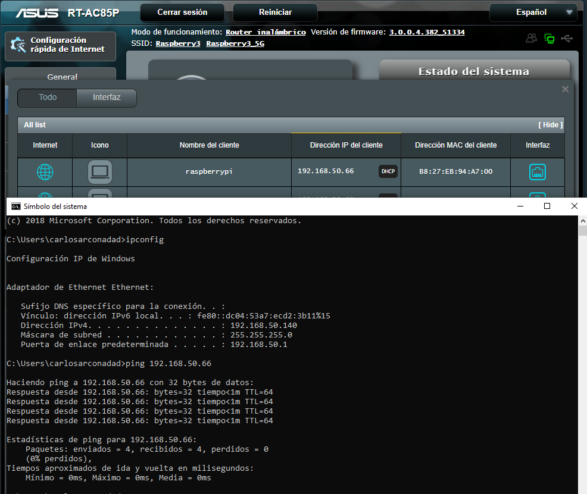

Para el desarrollo de este proyecto hemos precisado de un router, el cual su parte Wan irá conectada a la red del centro (192.168.41.0) y en su parte Lan (192.168.50.0) a la Raspbery pi
El primer reto que nos encontramos es configurar el router con los parámetros necesarios para la realización de esta actividad:
Una vez que comprobamos que tenemos todo operativo y con conectividad a la red pasaremos a configurar la Raspbery Pi
Para poder poder acceder a ella, tenemos que localizarla en el segmento de la red donde estamos trabajando. Para ello podemos emplear distintos métodos, uno de los más cómodos es acceder al portal de router, el cual nos indica de forma gráfica cuál es la dirección IP
Sabiendo su dirección IP podemos acceder a ella a través de SSH, para ello abrimos un terminal en el cual tenemos que introducir el siguiente comando ssh pi@192.168.50.66 donde le estamos indicando que se tiene que conectar a través de ssh a la (192.168.50.66) cuyo usuario por defecto es pi y contraseña raspberry
Una vez dentro de la raspberry procederemos a cambiar las contraseña por defecto. Los pasos a seguir son los siguientes: